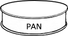
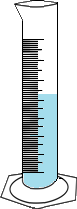
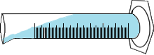
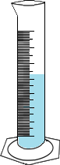
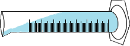
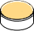

SHRINKAGE LIMIT TEST
Objective:
To determine the Shrinkage limit of the given soil sample.
Apparatus used:
Evaporating dish, Shrinkage dish, Immersion cup, Weighing machine, Glass plate with prongs, Mercury etc.


 Description
Shrinkage limit is defined as the maximum water content at which a reduction in water content will not cause a reduction in volume of a soil mass.
Description
Shrinkage limit is defined as the maximum water content at which a reduction in water content will not cause a reduction in volume of a soil mass.
Place 425µm sieve on the pan and pour weighed quantity of air dried soil to the sieve then close the lid.


Place the set of sieves in the mechanical shaker and allow to shake for 10 minutes.


Take a sample weighing about 100g from the thoroughly mixed portion of the material passing the 425-micron IS Sieve in an evaporating dish.


0.1
Mix the soil sample in the evaporating dish thoroughly with distilled water to make the soil pasty enough to be readily worked into the shrinkage dish without entrapping air bubbles.

 



Coat the inside of the shrinkage dish with a thin layer of Vaseline to prevent the soil sticking to the dish. Then measure the weight of empty shrinkage dish.
Weight of empty shrinkage dish, (W1) = _________ g
Fill the coated shrinkage dish with wet soil sample.
Measure the weight of shrinkage dish with wet soil sample.
Weight of shrinkage dish + wet soil, W2 = _________ g
Place the container with wet soil sample in the oven for 24 hours at 110°C temperature.


After 24 hours
Measure the weight of shrinkage dish with oven dried soil sample.

Weight of shrinkage dish + dry soil, (W3) = _________ g
Place the shrinkage dish in a container and fill the dish with mercury till it overflows slightly. Then press it with glass plate with prongs firmly on its top to remove excess mercury.
Measure the weight of shrinkage dish with mercury.
Weight of shrinkage dish + Mercury, (W5) = _________ g
Measure the weight of empty immersion cup.
Weight of empty immersion cup, (W6) = _________ g
Place the immersion cup in a container and fill the cup with mercury till it overflows slightly. Then press it with glass plate with prongs firmly on its top to remove excess mercury.
Measure the weight of immersion cup with mercury.
Weight of immersion cup + Mercury, (W7) = _________ g
Immerse the soil pat removed from shrinkage dish in the immersion cup full of mercury. Then press it with glass plate with prongs firmly on its top.

Remove the soil pat from the immersion cup and measure the weight of the immersion cup.
Weight of immersion cup + Mercury after immersion of soil pat, (W8) = _________ g
Observations :
| Weight of empty shrinkage dish, W1 | |
| Weight of shrinkage dish + wet soil, W2 | |
| Weight of shrinkage dish + dry soil, W3 | |
| Weight of empty shrinkage dish + Mercury, W5 |
Calculations:
| Weight of wet soil, W4 = | W2 - W1 = g |
| Weight of dry soil pat, Wd = | W3 - W1 = g |
| Volume of wet soil pat, V1 = | W5 - W1⁄13.6 = cm3 |
Observations :
| Empty weight of immersion cup, W6 | |
| Weight of immersion cup + Mercury, W7 | |
| Weight of immersion cup + Mercury after immersion of soil pat, W8 |
Calculations :
| Volume of dry soil pat, V2 = | W7 - W8⁄13.6 = cm3 |
| Shrinkage Limit, Ws= | (W4 - Wd)-(V1 - V2) ρw⁄Wd = % |
Inference: By the conduction of this test we can conclude that below a certain value of moisture content the volume of soil will not change and there will be presence of some voids which remain constant below a certain percentage of moisture content and this limit refers to the Shrinkage limit.